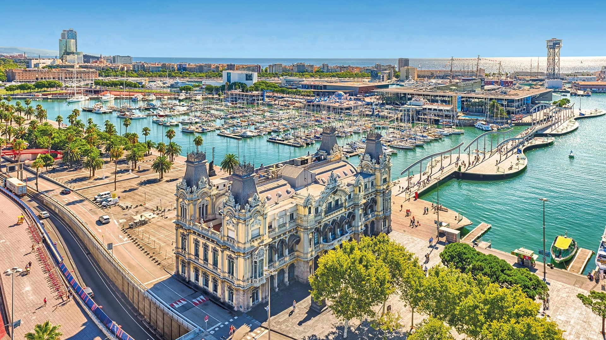

Španělsko je známé svou pestrou kulturou 🎨. Hlavním městem je Madrid 🏙️. Barcelona 🏗️ je slavná Gaudího architekturou. Flamenco 💃 symbolizuje španělskou vášeň. Země má více jazyků 🗣️. Španělská kuchyně nabízí paellu 🍤 a tapas 🍢. Moře 🌊 a slunce ☀️ lákají turisty. Španělé si cení siesty 😴. Fotbalové kluby Real Madrid ⚽ a Barcelona jsou legendy. Historická města jako Granada 🕌 ohromují svou krásou. Architektura má maurské vlivy 🧱. Olivový olej 🫒 je základní surovina. Fiesta 🎉 je symbolem radosti. Pobřeží Costa del Sol 🏖️ je velmi oblíbené. Španělé jsou otevření a pohostinní 🤝. Zpět na Jižní Evropu